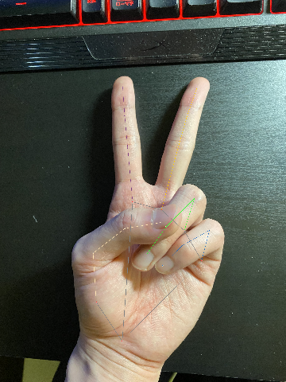

Home
ホームページに来ていただいてありがとうございます
ここには自己紹介と私の研究など載せています
ネオポルテ プライバシーポリシーの配色が白文字の白背景で読みにくいです
04/15追記: 開発計画(手元のみバーチャル化計画)を追加
自己紹介
名前: 武次 豪士 (Taketsugu Goshi)
年齢: 23歳
身分: 大学院生
趣味: ゲーム、 新しい技術を見たり試すこと
Skills
- HTML/CSS/Javascript (簡単なホームページ作成)
- python
- AviUtl
- 機械学習(AI): 自然言語処理/画像処理/強化学習/遺伝的アルゴリズム
研究概要
現在注目を集めている人工ニューラルネットワークは勾配法を基にした探索でパラメータの学習を行っている
勾配を利用した探索は局所的最適解に陥りやすく大域的最適解にならない場合がある
勾配情報を用いないDifferential Evolution(DE)と呼ばれる最適化アルゴリズムをでパラメータを学習させ、勾配法での学習結果との比較を行う
Differential Evolutionとは
Differential Evolutionは探索エージェントと呼ばれる候補解の集団を反復的に使用し確率的に探索を行う
探索の詳細は次の通りである
- エージェントを一定範囲に設定する
- 任意のエージェントの一つに注目して次の処理を行う
- Mutation(突然変異)
- Crossover(交叉)
- Selection(生存選択)
注目したエージェント以外の3つのエージェントから変異ベクトルを作成する
aで作成された変異ベクトルと注目したエージェントから新しいエージェントを生成する
注目したエージェントと新しく生成したエージェントを評価関数で比較し評価の高いほうを次世代のエージェントとして選択し残す
- 2の処理をすべてのエージェントに行い繰り返す
上記を繰り返すことで評価値の高いエージェントを保存し探索を行う
赤い点がエージェントで縦軸最小値になるように探索している様子
手元のみバーチャル化計画
背景
今回この計画を立てた理由は、色々なVtuberさんが超美麗3Dと称して手元配信を見かけたのが始まりです
最近でいえばchatgptなどとAIの発達が目覚ましいのですから手のみを変換することできるはずだ!!!知らんけど!!!
目的
手の認識技術がどうなっているのかの確認と実装
手法
Mediapipeと呼ばれる機械学習ライブラリーを使用することで手の認識ができるらしい
Before
After
おぉ!ちゃんと手の形を認識してる!
しかも少し手が隠れても予想してくれるモデルみたい
次は動画も試してみた

手元をスマホで撮影した動画での予想手の座標gif
それなりに追っている気がする！
手の全体が見えてなくても予想できているのは結構よいのでは!?
今後の展望
手の座標が2次元ではなく3次元的に取得しているので3Dの手のモデルがあれば重ねて表示できるのでは??まだわからんけど!!!!
でもこれができるとカードゲームとか手元配信ができるようになるともっと活動の幅もしくはVtuberとしての表現が広がるのでは!!??
手元配信が超美麗ではなくなる日を目指して!!
制作物
- このホームページ
- 研究概要に載せている画像(pythonで実験し作成)
- NEUTRINOでずんだもんに歌わせてみた動画を作成 URL:https://drive.google.com/file/d/1cDAkXE4ex-Qtfe7dQVwVUjAaxHNGVdwF/view?usp=sharing
Contact Me
Email: ktaketu@gmail.com